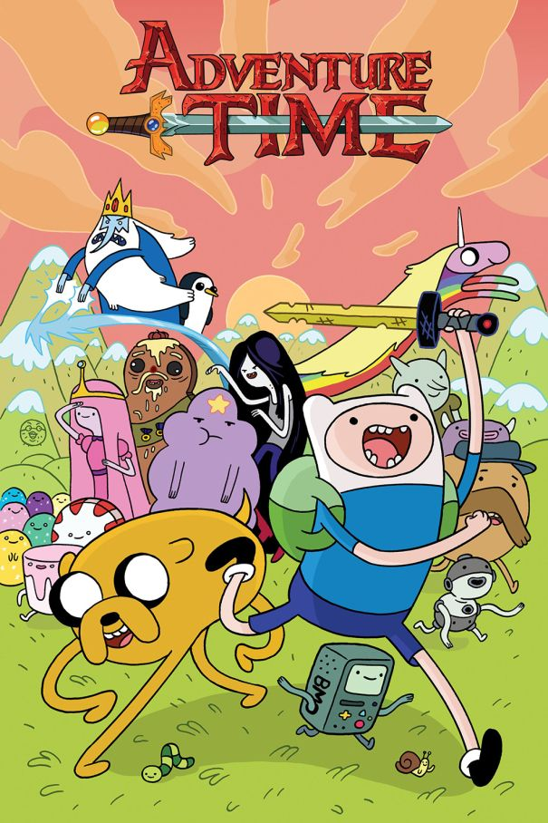

Narra las extravagantes, coloridas y a menudo absurdas y divertidas aventuras de un niño llamado Finn (Jeremy Shada) y su amigo canino parlante, Jake (John DiMaggio), que se unen para divertirse en la mística Tierra de Ooo. Dondequiera que haya problemas, Finn y Jake están listos para la acción en nombre de la justicia y la aventura, a menudo acudiendo en ayuda de sus amigas Dulce Princesa (Hynden Walch), o la vampiresa Marceline (Olivia Olson) y la colorida variedad de residentes de Ooo
Año: 2010
Duración: 11 min (Por capítulo)
País: Estados Unidos y Suecia
Calificación por edades: No recomendada para menores de 12 años.
IMDb: 8,6/10
Opinión de la audiencia: 4,9/5
Crítica por un anónimo: Para ser sincero, esta serie está demasiado sobrevalorada por la nostalgia y creo que se le da demasiado valor de que realmente se merece, así que voy a dar mi opinión respecto a esta serie. Al igual que muchas personas, comencé a ver esta serie desde niño y debo de admitir que en un inicio me encanto la serie, la premisa de la serie es muy sencilla, la serie gira en torno a 2 amigos que tienen diversas aventuras en una asombrosa tierra mágica conocida como Ooo.
En un inicio, la serie comenzó como una divertida serie de comedia, mezclado con un poco de humor absurdo, durante las primeras temporadas comenzaron con aventuras sencillas y simples, pero a pesar de ser simples te divertían y te mantenían entretenido, al menos así fue hasta a mediados de la 4° temporada donde comenzaron a desarrollar una historia, en un inicio esto no era un gran problema, porque todavía conserva un poco de su comedia y humor absurdo durante la 4° y 5° temporada, no es hasta la 6° temporada donde comienza a decaer terriblemente. La serie comenzó a volverse demasiado seria, a tal grado que te aburrías muchísimo y ya no te entretenía, comenzaron a sacar capítulos que no aportaban mucho a la trama, te confundían y hasta te dejaban con muchísimas dudas, pero lo mas terrible fue el desastre que hicieron con las relaciones amorosas, especialmente Finn, quien fue el personaje que mas sufrió. En cuando al desarrollo de personajes, para ser honesto, muy pocos personajes tuvieron desarrollo, entre los que puedo mencionar son La Dulce Princesa, Marceline, La Princesa Flama, Pan de Canela y nada más, de ahi en fuera, el resto de los personajes tuvieron poco o un nulo desarrollo. Lo único rescatable de las ultimas temporadas son las miniseries. En cuando al final de la serie, para ser honesto, fue un final regular, ni fue bueno ni malo, aparte, esa cosa a la que se enfrentaron casi no tuvo tanta relevancia en la serie, solo apareció en pocos capítulos y casi no tuvo ni explicación o desarrollo alguno.
Para finalizar con esto, esta serie tuvo un excelente comienzo, era una grandiosa serie que te mantenía entretenido y tenia grandiosos personajes, pero desafortunadamente comenzó a decaer terriblemente y para ser honesto, de que sirvió que le dieron tantos capítulos y de que la volvieran seria, si al final muy pocos personajes tuvieron desarrollo y dejaron varias cosas sin resolverse, por estas razones, esta serie no se merece tantos elogios de los que realmente se merece, no digo que es del todo una mala serie, pero también hay que reconocer que esta serie no fue perfecta y por mucho existen otras series que los superan en distintos aspectos.